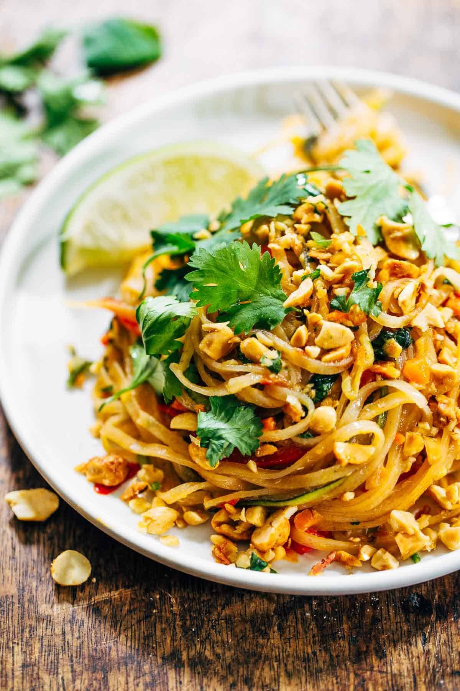
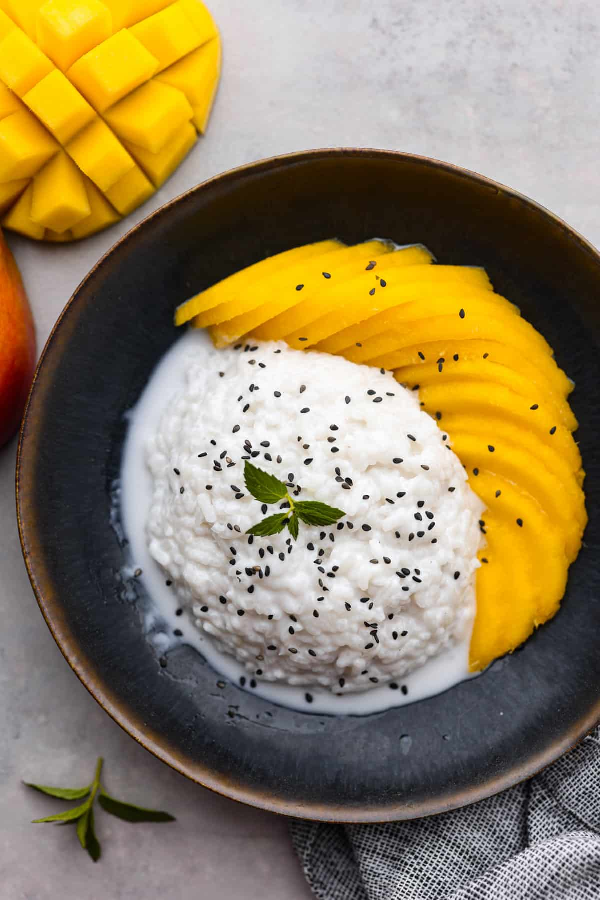

Bangkok – Foods

Pad Thai
Stir-fried noodles with shrimp, tofu, and peanuts — classic Thai street food.
Tom Yum Soup
Spicy and sour soup with shrimp, lemongrass, and kaffir lime leaves.

Mango Sticky Rice
Sweet coconut sticky rice served with ripe mango — a beloved dessert.